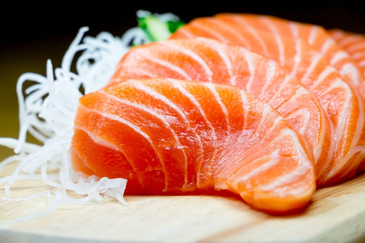

Sashimi
Sashimi é uma iguaria da culinária japonesa que consiste de peixe e frutos do mar muito frescos,fatiados em pequenos pedaços e servidos apenas com algum tipo de molho (geralmente shoyu, pasta de wasabi, condimentos como gengibre fresco ralado ou ponzu), e guarnições simples como shiso e raiz de daikon fatiada.
Ingredientes
- 500 g de salmão fresco fatiado bem fininho (utilize uma faca afiada antes de fatiar, sempre esfregue limão na lâmina para uma fatia não colar na outra)
- 1 xícara (café) de shoyu
- 1 colher de sopa de gengibre fresco ralado
Modo de preparo
- Fatie o salmão utilizando uma faca afiada e a cada corte esfregue uma banda de limão na faca para não grudar o peixe.
- Rale o gengibre.
- Misture com shoyu.
- Coloque a mistura num recipiente e deixe o peixe marinando por 15 minutos.
- Sirva de preferência acompanhado com arroz japonês (gohan).